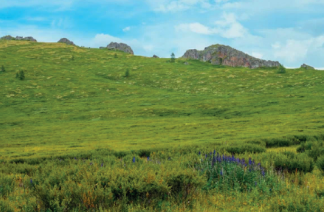
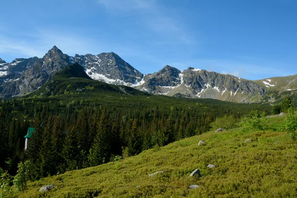
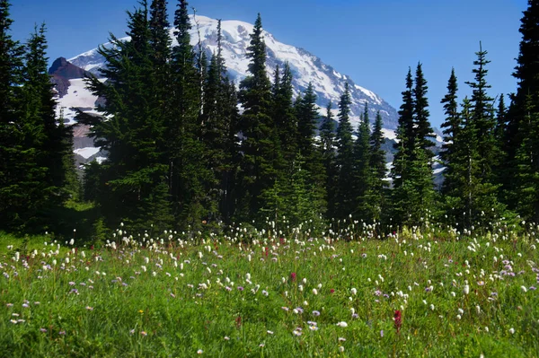
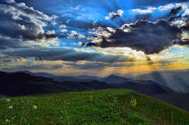
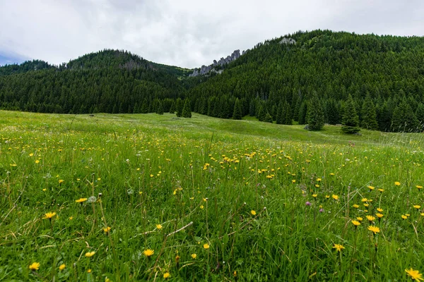
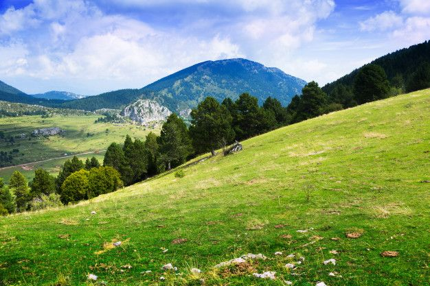

Pradera de alta montañaSe halla a más de 3500 msnm cerca de las nieves perpetuas, con un clima húmedo y frío
de altura. La precipitación media anual comúnmente pasa de los 1500 mm y puede llegar
hasta 3000 mm. La época de secas varía de 0 a 4 meses, con frecuentes neblinas y alta
humedad atmosférica, que baja el periodo de luminosidad, con temperaturas menores a 0
°C. Rodeando a estas franjas frías se encuentran los bosques de coníferas



La fauna está formada
por venados cola blanca,
gallinas de monte,
halcones, cuervos, pájaros
silvestres, codorniz pinta,
águila, gavilán, paloma de
collar, coyote, tuza, tejón,
zorrillo, ardillas, armadillo,
cacomixtle, tlacuache,
conejo, gato montés y
ratón de campo.



Angel Esteban Tabardillo BrionesDayann Gerardo Cordova ArmendarizJuan Pablo Ortiz GonzalesIvan Alberto Rodriguez HernandezJose Rigoberto Martinez Peraza